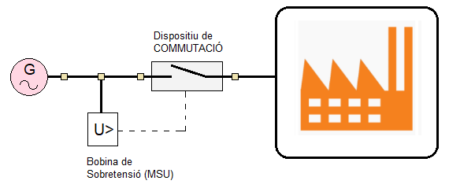
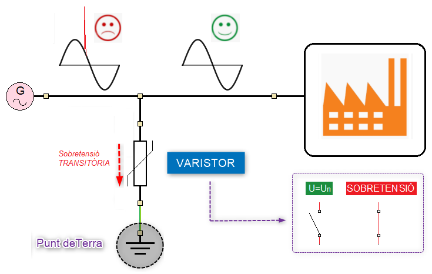

El mètode de protecció contra les sobretensions es diferent segons es tracte de sobretensions permanents o transitòries.
Sobretensions permanents: Desconnexió de la Instal·lació
S'utilitza una bobina de sobretensions connectada al dispositiu de commutació de la instal·lació elèctrica. La bobina vigila en tot moment el valor de la tensió de la instal·lació elèctrica i quan aquesta supera el 110% de la tensió nominal (U=253V) dona l'ordre al sistema de commutació de desconnectar la instal·lació elèctrica.

Sobretensions Transitories: Supressió de la sobretensió sense desconnexió de la instal·lació.
En aquest cas s'utilitza un varistor connectat entre fase i terra per eliminar l'excés d'energia que porta associada la sobretensió transitòria..

Un varistor és una resistència variable amb la tensió que se comporta com un interruptor tancat (IN) en cas de sobretensions transitòries i com interruptor obert (OFF) en condicions de tensió nominal (U=230V).